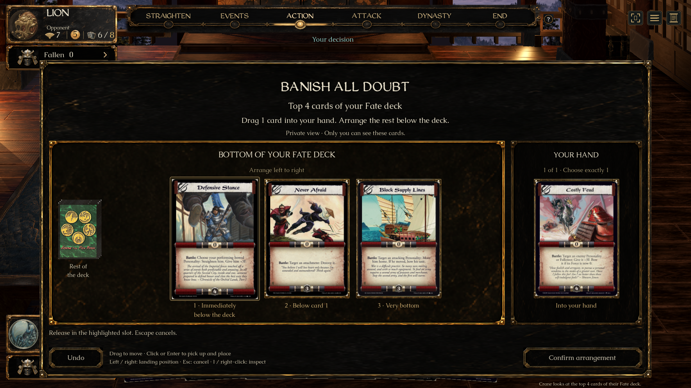
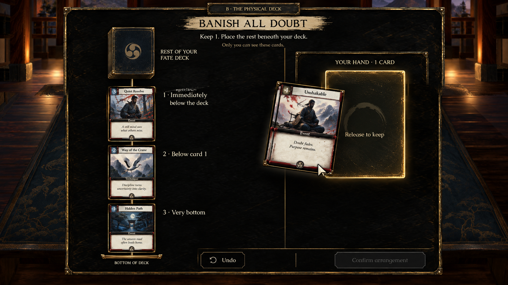

Drag cards into their destinations
A’s layout + B’s clear deck-order labels. The approved design is implemented in the native game. Review the new result before approving it for integration. Nothing has been merged into main.
PR #434 and review feedback · Native launcher: L5R Top Cards - Drag Review.app, linked in the conversation.
Source and native result
The layout and positional explanation follow the selected concepts. The game retains its actual lacquer/brass artwork, original scans and heading font. Generated card art, parchment heading decoration and invented card text are not copied. This is not an exact full-screen pixel match.
Before release
A gold landing outline and live order labels show where the card will go. Neighbors make room. The arrangement stays a private draft until Confirm.

B’s order explanation
B · Order-label reference
Top: 1 · Drawn first; 2 · Below card 1.
Bottom: 1 · Immediately below the deck; 2 · Below card 1; 3 · Very bottom.
Drop outside a tray or press Escape to cancel. Undo reverses the last draft move. Click/Enter placement and left/right landing positions are available without dragging. Right-click or I opens the full scan.
Only engine-offered destinations appear. Eligibility and count bounds remain enforced; filling a Hand tray does not silently replace its card.
Native Mac tests passed at 1920×1080 and 1280×800: dragging, insertion, keyboard/click alternatives, cancel/undo, exact engine outcomes, eligibility/count limits, privacy and seat/busy resets. Windows graphical testing and Mendon’s acceptance remain open.